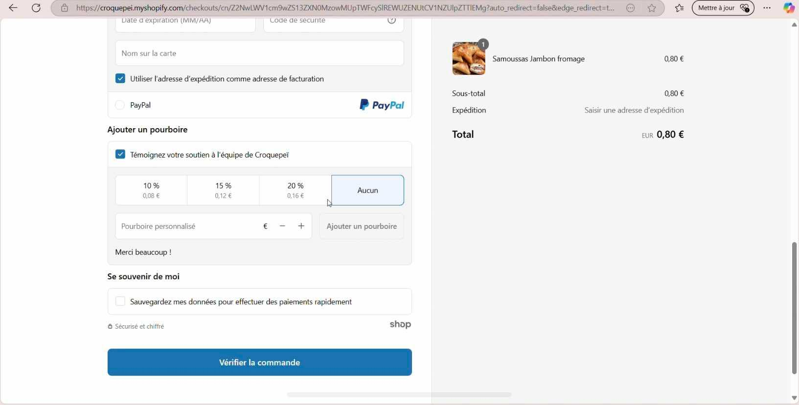
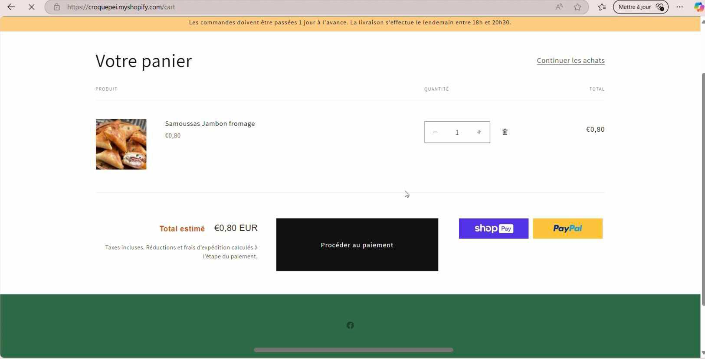
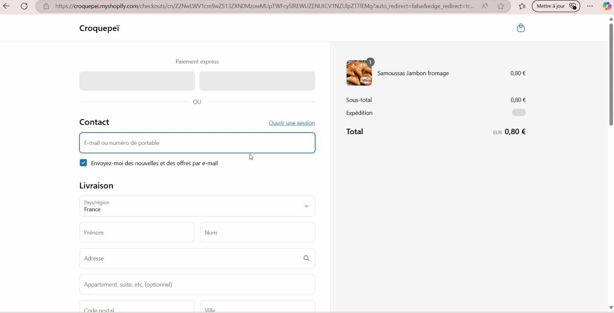
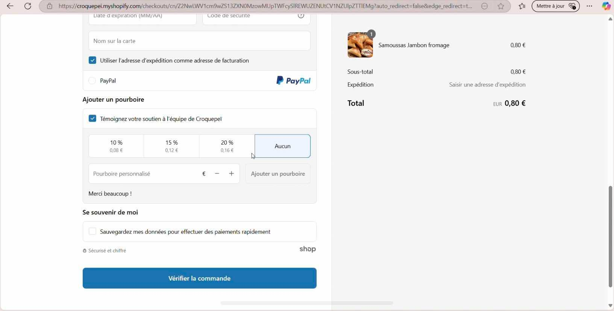
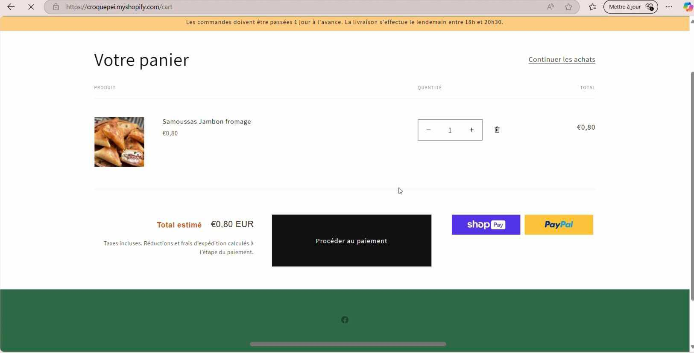
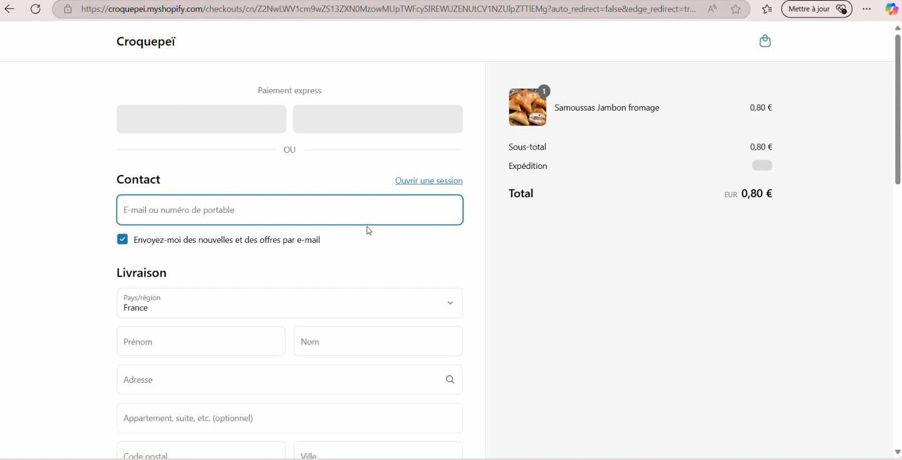

CroquePeï
Un concept de livraison de samoussas à domicile
Ce projet visait à proposer un service de livraison de samoussas faits maison, inspiré de la cuisine créole. La plateforme était construite sur Shopify et permettait aux clients de commander en ligne. Ce projet e-commerce autour de la vente de samoussas en livraison à domicile a été ma première véritable immersion dans le monde du web design et de l’intégration front-end. J’ai utilisé Shopify comme base de création, tout en poussant la personnalisation à travers l’apprentissage et l’application de plusieurs technologies du web. Grâce à CSS pour concevoir une identité visuelle cohérente (palette de couleurs, typographie, disposition en grille, animations), j’ai pu créer un site à mon image, fonctionnel et esthétique. J’ai conçu des bannières personnalisées, intégré des redirections internes, configuré la gestion des cookies et mis en place un système de paiement sécurisé. J’ai également appris à adapter les templates existants sur Shopify à l’aide de Liquid, le langage de templating propre à cette plateforme. Pour l’aspect graphique, j’ai utilisé Canva afin de produire une image d’accueil professionnelle qui s’insère parfaitement dans l’univers visuel du site. Même sans formation initiale en développement, ce projet m’a permis de découvrir concrètement les bases du design responsive, du débogage, de la gestion de contenu, et de la hiérarchisation de l'information utilisateur (UX/UI). Il constitue une base solide pour mes futures créations web.
 




